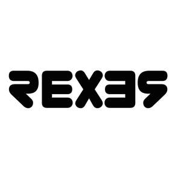

Trade Mark Journal No.2025/028 11 July 2025
UK00004226182 29 June 2025 (9)

- Class 9
- Glasses; Spectacles [glasses]; Anti-glare glasses; Glasses, sunglasses and contact lenses; Sun glasses; Protective glasses; Sports glasses; Glasses for sports; Eyeglasses; Magnifying eyeglasses; Cyclists' glasses; Lenses for sunglasses; Sunglasses; Goggles; Frames for sunglasses; Clip-on sunglasses; Magnifying lenses; Sunglass lenses; Protective eyeglasses; Eyeglass lenses; Spectacles; Anti-glare spectacles; Eyewear; Eyeglasses for sports; Cords for eyeglasses; Voltage testers; Circuit testers; Electrical circuit testers; Battery testers; Electric circuit testers; Voltage regulators; Insulation testers; Current testers; Mains testers (Electric -); Voltage detectors; Speedometer testers; Voltage regulators for vehicles; Voltage converters; Microhardness testers; Voltage limiters; Continuity testers; Voltage meters; Voltage dividers; Glow plug testers; Brake fluid testers; Diesel injector testers; Audio cable testers; Voltage surge protectors; Textile testers; Lumber testers; Earth testers; Meat thermometers; Digital meat thermometers; Candy thermometers; Food timers; Thermometers; Mercury thermometers [other than for medical use]; Household thermometers; Remote controls; TV remote controls; Protective and safety equipment; Security cameras; Safety goggles; Safety locking devices [electric]; Safety life belts; Clothing for protection against chemicals; Clothing for protection against fire; High-visibility safety clothing; Hi-viz safety clothing; Eye protection wear for sports; Weights for use with weighing scales; Weighing scales; Weight measuring instruments; Scales; Kitchen weighing scales; Electronic weighing scales; Baby scales; Postage scales; Kitchen scales; Digital bathroom scales; Weighing apparatus; Tape measures; Tape rulers; Measuring tapes.
Zeta Traders Limited